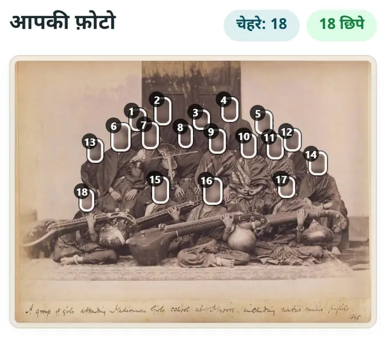
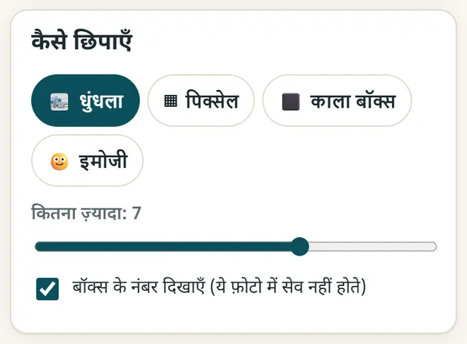

फ़ोटो शेयर करने से पहले उसमें चेहरे कैसे ब्लर करें
क्लास की फ़ोटो, ऑफ़िस का कार्यक्रम, दुकान में खड़ा ग्राहक: फ़ोटो किसी ग्रुप या सोशल मीडिया पर जाने से पहले उन लोगों को छिपा दें जिन्होंने इसकी हामी नहीं भरी। इसमें एक मिनट लगता है और फ़ोटो आपके फ़ोन से बाहर नहीं जाती।
छोटा जवाब
चेहरा ब्लर: सुरक्षित शेयरिंग खोलें और “फ़ोटो चुनें” दबाएँ। AI चेहरे ढूँढकर छिपा देता है। कोई चेहरा फिर दिखाना हो तो उसके बॉक्स पर टैप करें, नंबर प्लेट और नाम के बैज के लिए “बॉक्स बनाएँ” इस्तेमाल करें, छिपाने का तरीक़ा चुनें (“काला बॉक्स” और “इमोजी” सबसे अच्छा छिपाते हैं) और “JPG में सेव करें” दबाएँ। सेव की गई फ़ोटो में GPS लोकेशन नहीं रहती।
5 स्टेप में चेहरे छिपाएँ
-
फ़ोटो चुनें
चेहरा ब्लर: सुरक्षित शेयरिंग खोलें और “फ़ोटो चुनें” दबाएँ, या देखने के लिए “नमूना फ़ोटो आज़माएँ” दबाएँ। पहली बार चेहरे ढूँढने वाला AI एक बार डाउनलोड होता है (Wi-Fi बेहतर है)।
-
हर चेहरा जाँचें
जो चेहरे मिले, वे अपने-आप छिप जाते हैं। किसी का चेहरा फिर दिखाना हो, जैसे जिसने हामी भरी है, तो उसके बॉक्स पर टैप करें; दोबारा टैप करने पर वह फिर छिप जाएगा। पीछे के छोटे चेहरे छूट गए हों तो “छोटे चेहरे और ध्यान से ढूँढें” दबाएँ।

चेहरे मिल गए और छिप गए। दिखाने या छिपाने के लिए बॉक्स पर टैप करें। -
दूसरी निजी चीज़ें भी ढकें
“बॉक्स बनाएँ” दबाएँ और नंबर प्लेट, मकान नंबर, नाम के बैज, ID कार्ड और स्क्रीन पर उँगली खींचकर बॉक्स बनाएँ।
-
छिपाने का तरीक़ा चुनें
“धुंधला”, “पिक्सेल”, “काला बॉक्स” या “इमोजी” चुनें और ताक़त तय करें। काला बॉक्स या इमोजी सबसे अच्छा छिपाते हैं; हल्के ब्लर में चेहरा कभी-कभी फिर भी पहचान में आ सकता है।

छिपाने का तरीक़ा चुनें: ब्लर, पिक्सेल, काला बॉक्स या इमोजी। -
लोकेशन जाँचें और सेव करें
“लोकेशन जाँच” बताता है कि असली फ़ाइल के अंदर GPS लोकेशन है या नहीं। “JPG में सेव करें” या “PNG में सेव करें” दबाएँ: सेव की गई फ़ोटो नए सिरे से बनती है, इसलिए उसमें लोकेशन और कैमरे की जानकारी नहीं होती। शेयर करने से पहले ज़ूम करके एक बार और जाँच लें।
शेयर करने से पहले: काम की बातें
- AI कैमरे की ओर देखते ज़्यादातर चेहरे ढूँढ लेता है। मुड़े हुए, ढके हुए या बहुत छोटे चेहरे छूट सकते हैं, इसलिए हमेशा जाँचें और हाथ से बॉक्स जोड़ें।
- पहले पूछें। भारत के डिजिटल पर्सनल डेटा प्रोटेक्शन एक्ट, 2023 के तहत जिस फ़ोटो से किसी की पहचान हो, वह उसका निजी डेटा है। बच्चों के मामले में माता-पिता से पूछें।
- यूनिफ़ॉर्म, स्कूल का नाम, साइनबोर्ड या मकान नंबर से भी कोई अजनबी जान सकता है कि बच्चा कहाँ पढ़ता या रहता है। इन्हें भी ढकें।
- असली फ़ाइल नहीं, सेव की गई कॉपी शेयर करें। फ़ोटो का पूरा बैकग्राउंड हटाना हो तो AI बैकग्राउंड रिमूवर इस्तेमाल करें।
नए मुफ़्त टूल और हिंदी में AI के पाठ पाएँ
हमारी ईमेल लिस्ट से जुड़ें: नए मुफ़्त ऐप, नई गाइड और AI पर हिंदी वीडियो पाठ की जानकारी आपको मिलती रहेगी। कोई स्पैम नहीं।
सिर्फ़ वयस्कों (18+) के लिए। आप कभी भी नाम हटवा सकते हैं।
हम ये टूल क्यों सुझाते हैं
- सबके लिए मुफ़्त: न विज्ञापन, न साइन-अप, न कोई पेड प्लान।
- प्राइवेट: आपकी फ़ाइलें और जानकारी आपके अपने डिवाइस पर ही रहती हैं।
- फ़ोन, लैपटॉप या स्मार्टबोर्ड पर चलते हैं, और एक बार खुलने के बाद बिना इंटरनेट भी।
- हिंदी समेत 12 भाषाओं में।
वीडियो से सीखना पसंद है? हमारे YouTube चैनल पर AI और मुफ़्त टूल्स के हिंदी पाठ देखें।
अक्सर पूछे जाने वाले सवाल
क्या मेरी फ़ोटो अपलोड होती है?
नहीं। सिर्फ़ चेहरे ढूँढने वाला AI आपके डिवाइस पर डाउनलोड होता है, वह भी एक बार। फ़ोटो आपके फ़ोन या कंप्यूटर से बाहर नहीं जाती।
क्या कोई बाद में ब्लर हटा सकता है?
सेव की गई फ़ोटो एक नई तस्वीर है: असली तस्वीर उसके अंदर छिपी नहीं रहती। काला बॉक्स या इमोजी वापस नहीं हटाए जा सकते। हल्के ब्लर में चेहरा कभी-कभी पहचान में आ सकता है, इसलिए ताक़त ज़्यादा रखें।
क्या यह फ़ोटो से लोकेशन हटा देता है?
हाँ। यहाँ सेव की गई फ़ोटो में GPS लोकेशन, कैमरे की जानकारी या कोई और छिपा डेटा नहीं रहता। ऐप यह भी दिखाता है कि आपकी असली फ़ाइल में लोकेशन थी या नहीं।
क्या मैं नंबर प्लेट या नाम छिपा सकता हूँ?
हाँ, हाथ से: “बॉक्स बनाएँ” दबाएँ और उस पर बॉक्स खींचें। AI सिर्फ़ चेहरे ढूँढता है।
क्या यह ग्रुप फ़ोटो में काम करता है?
हाँ। यह छोटे चेहरे भी ढूँढता है, और “छोटे चेहरे और ध्यान से ढूँढें” दोबारा खोजता है। बड़े ग्रुप में पीछे की क़तारें ख़ुद जाँच लें।
काम की लगी?
इसे किसी दोस्त, साथियों या अपने स्कूल के WhatsApp ग्रुप में भेजें।